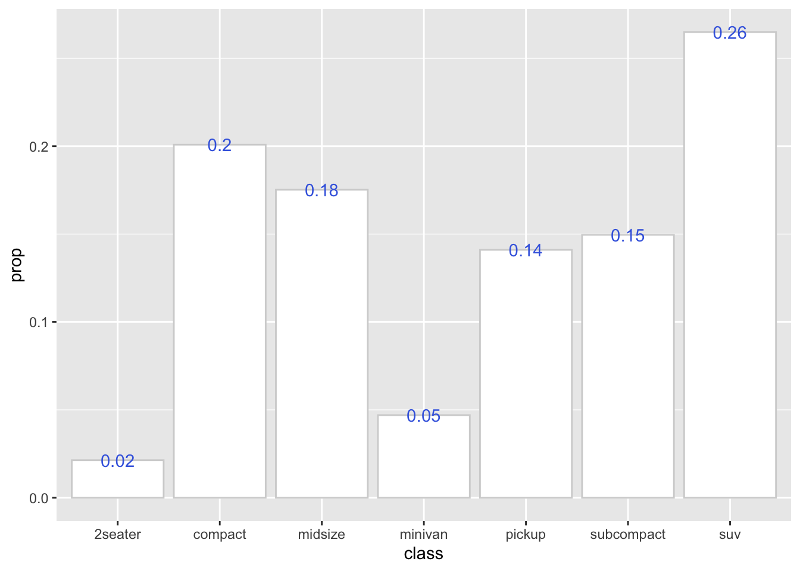
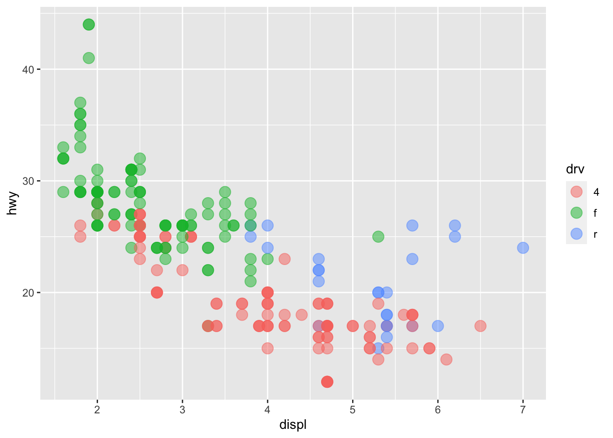
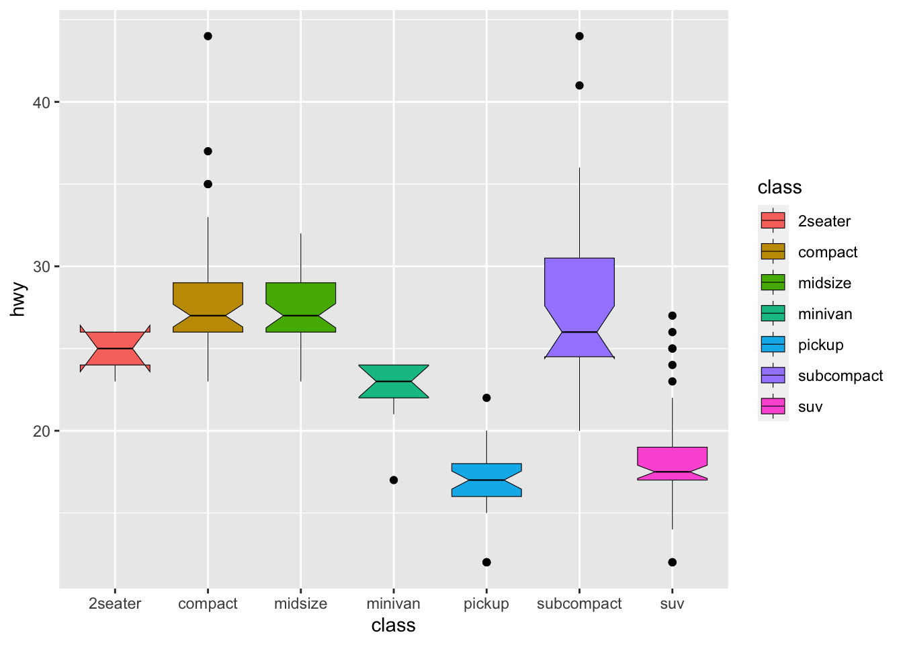

Chapter 7 Midterm Exam
7.1 Important Instructions
The midterm exam consists of three parts. Questions in Part I are related to R basics; those in Part II are based on the Spotify Song Dataset (
demo_data/data-top-spotify-song-2010-2019.csv); those in Part III are based on the Noise Dataset (demo_data/data-noise.csv).There are two types of questions: 10% and 20%. The percentage of each question is clearly specified in the descriptions. The total grade of the midterm is 140%. The passing grade is 70%.
Your submitted R script should follow the exact same format as your previously submitted assignments. Namely, you need to indicate clearly which parts of the codes respond to which midterm question. Always specify clearly the exercise number. Codes without clear structured comments indicating the number of exercises will be ignored.
Please note that your submitted script will be evaluated by sourcing the entire script in the working directory (i.e., a directory with the
demo_datafolder containing all necessary data files). And the performance of your scripts will be assessed in terms of how close the outputs are to the sample results provided after each exercise.Please submit your R script by: 13:00, Fri., April 24, 2020 via Moodle.
Name your script as follows:
midterm-alvin.R(use your own name in the filename).You must write codes on your own. Asking others to write for you is absolutely forbidden. Any report of misconduct will be taken seriously.
7.2 Part I: R Basics
Exercise 7.1 (10%) Please re-create the object, named mylist, as shown below. The auto-print of your object mylist in the R console should be EXACTLY THE SAME as the results provided below. You should determine the object types (e.g., vector, matrix, list, factor etc.) of each element in mylist by closely examining the auto-print outputs below.
Important notes:
- Please pay attention to the object class: is it a character/numeric
vector,list, ormatrix?
- Please pay attention to the length of the vectors/factors
- Please pay attention to the dimensions of the matrix
- Please pay attention to the levels of the factors (especially the order of the levels)
mylist in R console:[[1]]
[1] -2.0 -1.5 -1.0 -0.5 0.0 0.5 1.0 1.5 2.0
[[2]]
[,1] [,2] [,3]
[1,] 20 24 28
[2,] 21 25 29
[3,] 22 26 30
[4,] 23 27 31
[[3]]
[1] "Taiwan can help!" "Taiwan is helping!"
[[4]]
[1] HighSchool Bachelor Master PhD Master Bachelor HighSchool
Levels: HighSchool Bachelor Master PhDExercise 7.2 (10%) How do you subset all the values that are larger than 0 from the first element of mylist?
[1] 0.5 1.0 1.5 2.0[1] 0.5 1.0 1.5 2.07.3 Part II: Spotify Songs Dataset
In this part, please use the dataset from demo_data/data-top-spotify-song-2010-2019.csv, which includes the top songs by year based on Spotify (Original source: Kaggle). You can easily load the dataset into R using read_csv() from library(readr).
The description of each column of songs is as follows:
title: Song’s titleartist: Song’s artisttop genre: The genre of the trackyear: Song’s year in the Billboardbpm: Beats per minute - The tempo of the song.nrgy: Energy - The energy of a song - the higher the value, the more energtic the songdnce: Danceability - The higher the value, the easier it is to dance to this song.dB: Loudness (in dB) - The higher the value, the louder the songlive: Liveness - The higher the value, the more likely the song is a live recordingval: Valence - The higher the value, the more positive mood for the song.dur: Length - The duration of the song.acousAcousticness - The higher the value, the more acoustic the song is.spch: Speechiness - The higher the value the more spoken word the song contains.pop: Popularity - The higher the value the more popular the song is.
Please answer the following questions based on this dataset songs.
Exercise 7.3 (10%) Create a histogram, showing the distribution of the song durations in the dataset. From the histogram, we can see the number of songs (i.e., y-axis) whose durations fall within particular ranges (i.e., x-axis).
Please adjust the aesthetic settings of the histogram according to the sample graph provided below.
Hint:geom_histogram()

Exercise 7.4 (10%) Provide the number of songs by artist and include only the data of artists who have at least 10 songs in the original dataset.
Please arrange your result according to the number of the artists’ songs in a descending order. A sample is provided below.Exercise 7.5 (10%) Create a data frame summarizing the distribution of the song genres.
In your result data frame, you need to show the number of songs in each genre, as well as their percentages.
- Please round the numbers to two decimal places.
- Please arrange the data frame according to the percentage in a descending order.
Exercise 7.6 (10%) Continuing Exercise 7.5, for gernes with at least 10 songs (there are eight genres satisfying this criterion), create a barplot showing the average acousticness of each genre.
Please order the bars in a descending order according to the average acousticness (i.e., the mean scores of the acouosticness) of the songs in each genre.
Exercise 7.7 (20%) Create a data frame which shows the mean scores of song durations by different years. Also, please compute the 95% confidence intervals of the mean scores.
The 95% Confidence interval is defined as:
\[\overline{X} \pm 1.96 \times \frac{\sigma}{\sqrt{N}}\]
- \(\overline{X}\) is the mean score of the song durations for songs of the same year
- \(\sigma\) is the standard deviation of the song durations for songs of the same year
- \(N\) is the total number of songs in each year
In your result data frame, you should include the folowing columns:
year: song yearmean_dur: the mean scores of song durations for songs of each yearsd_dur: the standard deviation of the song durations for songs of each yearn: the number of songs in the yearupper: the upper bound of the 95% confidence interval of the mean score (i.e., \(\overline{X} + 1.96 \times \frac{\sigma}{\sqrt{N}}\))lower: the lower bound of the 95% confidence interval of the mean score (i.e., \(\overline{X} - 1.96 \times \frac{\sigma}{\sqrt{N}}\))
Please round all numbers in the data frame to two decimal places.
Hint: When applyinggroup_by() to your dataset, you can use summarize() to get summary statistics for each sub data frames. You can easily get the number of tokens in each sub data frame using n() within summarize(). Please see the documentation of summarize() for more detail.
Exercise 7.8 (10%) Based on the data frame from Exercise 7.7, please create an error plot as shown below. The points show the mean scores of the song durations and the error bars indicate the 95% confidence intervals of the mean scores for each year. (Use the upper/lower bounds computed in Exercise 7.7)
Please check VERY CAREFULLY if the values of the points and error bars in your graph (i.e., values in y axis) are correct based on the sample graph provided below as well as the sample data frame provided in Exercise 7.7.
Hint: You can usegeom_errorbar() to add the error bars of 95% confidence intervals.

Exercise 7.9 (20%) Please create a plot as shown below, showing the popularity of the artists for the YEAR 2019.
The popularity of the artists is defined as the average of the popularity of all the artist’s songs in year 2019.
Your graph will be evaluated in terms of how similar it looks to the sample graph provided below.
Hint: You can add points usinggeom_point(). For the lines, geom_segment() is a geom object, which allows you to draw line segments in ggplot2.

7.4 Part III: Noise Dataset
In this part, please use the dataset demo_data/data-noise.csv, which includes the task performance of people under various levels of background noise. You can easily load the dataset in R using read_csv() from library(readr):
The columns SUBJECT and GENDER provide the general profiles of the subjects; the columns from NONE to HIGH provide subjects’ task performance under various levels of background noise.
noise from the current wide format to the long format as shown below.
Exercise 7.11 (20%) With a long format of the dataset, create a bar plot as shown below, indicating the mean scores of PERFORMANCE for females and males under each level of NOISE environment.
- Please note that the levels of NOISE need to be ordered, i.e.,
NONE<LOW<MEDIUM<HIGH, as specified in the x-axis below. - Bars for females and males should be included in the same graph, with separate bars.
- Manually determine the colors of the bars for males (
lightblue) and females (lightpink)

You’ve reached the end of the exam.
Before submitting your R script, please “source” your entire R script in your Rstudio to make sure that the script would not break in the mid.